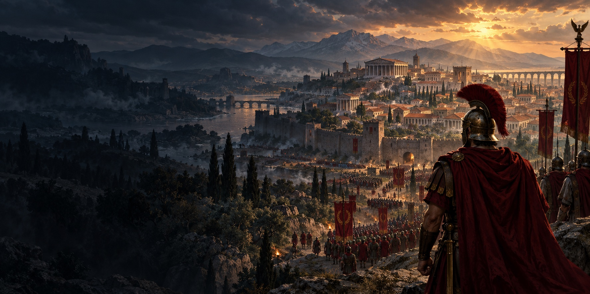

THE SPIRIT OF CLASSIC RTS. A NEW CHAPTER.
History is yours
to command.
A new age of ancient-world strategy.
Built with passion. Made to be played together.
FAMILIAR SOUL. NEW POSSIBILITIES.
For the battles
you still remember.
And the ones to come.
Some games stay with you long after the last battle.
Centurion comes from that feeling. Inspired by the spirit of old RTS games, we’re creating a real-time strategy game that brings the ancient world to life—and brings its players together.
Command armies, make the battlefield your own, and explore a world built to grow through the imagination of its community.
Meet the projectONE GAME. A WORLD OF POSSIBILITIES.
Command. Create. Make it yours.

THE NEXT CHAPTER IS OURS
Great games bring
people together.
Veteran of old RTS games or discovering ancient-world strategy for the first time? There’s a place for you here. Meet the people behind Centurion, share your ideas, and find your next rivals.
Find your people on Discord (opens Discord in a new tab)Players. Creators. A shared love of strategy.THE FIRST MARCH
Get to know the first alpha.
A closer look at the first playable chapter of Centurion.